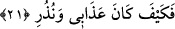
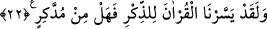

21. Nasılmış benim azabım ve uyarılarım!
Bu âyet-i kerîme’de azap ve uyarmalar açıklandıktan sonra, muhâtaplarda sakınma ve
hayret uyandırılmaktadır. Bu sebeple, İrşad adlı eserde de ifâde edildiği gibi bir tekrar
söz konusu değildir.
Burhânu’l-Kur’an adlı eserde şöyle denilmiştir; Âd kıssasında, “Nasılmış benim
azabım ve uyarılarım?” âyet-i kerîme’sini Allah tekrar etti. Çünkü birincisi dünyada,
ikincisi de âhirette geçerlidir. Nitekim, Kur’ân-ı Kerim’de bu konuda “Bu suretle
Allah, dünya hayatında onlara rezilliği tattırdı. Âhiret azabı daha büyüktür. Keşke
bunu bilselerdi!” (ez-Zümer, 39/26) buyurulmuştur. Ayrıca denildi ki, birincisi,
helâklerinden önce onları, helâklerinden sonra da onlardan sonrakileri uyarmak içindir.
22. Andolsun biz Kur’ân’ı düşünüp öğüt alınsın diye kolaylaştırdık. Öğüt alan yok
mu?
Bu âyet-i kerîme’nin îzâhı öncekinde geçmişti. Ayrıca bunda şuna işâret vardır;
kötülükleri şiddetle emreden nefislerinin esîri olanlar, bedenî şehvet ve isteklerine
dalmaları sebebiyle, Allah’ın rahmetinden ve vereceği güçten perdelenip engellendiler.
Bu sebeple Allah üzerlerine karanlık heves ve isteklerini, uğultulu rüzgarlarını ve
şeytânî bid’atlarını, uğursuzluk gününde gönderip musallat etti. Onlar da köklerinden
koparılıp yere devrilen hurma kütükleri gibi rezillik ve hakaret toprağına cansız ve
başsız olarak düştüler. Allah’ın kahrının tecellîlerinden, azab ve gazabının tasallutundan
her ay ve günde yine Yüce Allah’a sığınırız. Akıllı olan kimsenin bu çok önemli
uyarmadan; bu âyetten ibret ve öğüt alması gerekir.
Bedbaht birisi bir musîbete düşerse
İyi talihliler ondan ders alırlar.
Sen cezâdan önce af kapısını çal ki,
Sopa altında feryâd etmenin faydası yoktur.
Şâyed bir kimse, hayatından ümîdini kestikten sonra îman etse veya tevbe etse kabul
olunmaz.
Madem sulh kapısını açık görüyorsun; sulh yolunu tut
Zira tevbe kapısı ansızın kapanabilir.
Günah yükü altına girme ey oğul!